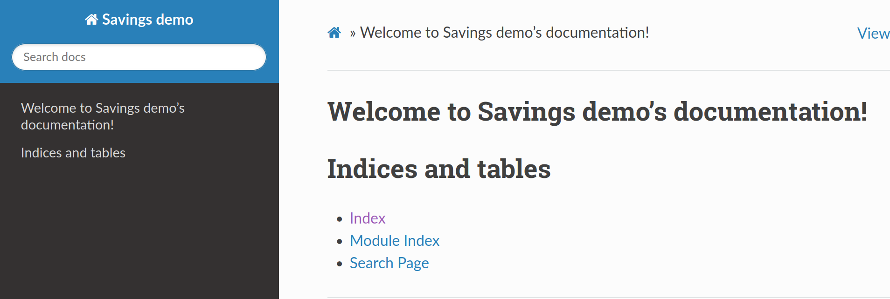

name: inverse layout: true class: center, middle, inverse --- <script type="text/javascript" src="https://cdn.mathjax.org/mathjax/latest/MathJax.js?config=TeX-AMS-MML_HTMLorMML"> </script> # Packaging and documentation CB2060 Applied programming for life sciences KTH --- layout: false ## Goal ## Preparing your package for pypi A simple tool: flit * Install flit in your virtual environment ``` (myenv) $ pip install flit ``` Three steps 1. flit init 2. flit build 3. flit publish --- ## init ~~~ $ flit init ~~~ * Answer questions * generates standars License file * a `pyproject.toml` file - meta-data about your project --- ## build ~~~ $ flit build ~~~ * Creates a dist subfolder - a compressed archive of your source - a "wheel", a standardised (binary) zip file with metadata --- ## install ~~~ $ flit install ~~~ * Installs as a package in the local environment - typically under `...venv.../lib/python3.8/site-packages` - a `--symlink` option will link back to source directory --- ## publish ~~~ $ flit publish ~~~ ...and it is available to anyone --- ## Readthedocs/sphinx * A standard for documenting Python programs * Documentation published at project.readthedocs.io * Sphinx tool for generating docs --- ## Initialize ~~~ $ source venv/bin/activate $ (venv) pip install sphinx $ (venv) mkdir docs $ (venv) cd docs $ (venv) sphinx-quickstart ~~~ Files generated ~~~ docs ├── _build ├── conf.py (configuration) ├── index.rst (main document) ├── make.bat ├── Makefile ├── _static └── _templates ~~~ --- Generate html ~~~ $ make html ... The HTML pages are in _build/html. ~~~ <img src="img/sphinx1.png" class=centered> Using the read-the-docs theme ~~~ $ pip install sphinx-rtd-theme ~~~ ~~~ #conf.py theme = 'sphinx_rtd_theme' ~~~  --- Extract source documentation ~~~ #savings.py """ Module documentation here... """ def savings_counter(): """ This is a function docstring """ ... ~~~ ~~~ #conf.py extensions = ['sphinx.ext.autodoc'] ~~~ ~~~ $ sphinx-apidoc -o . .. Creating file ./savings.rst. Creating file ./modules.rst. ~~~